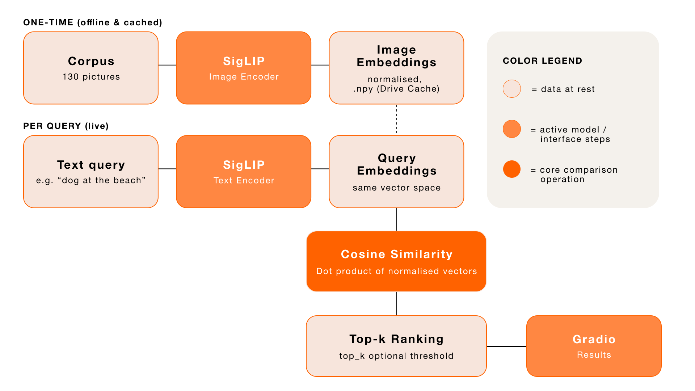
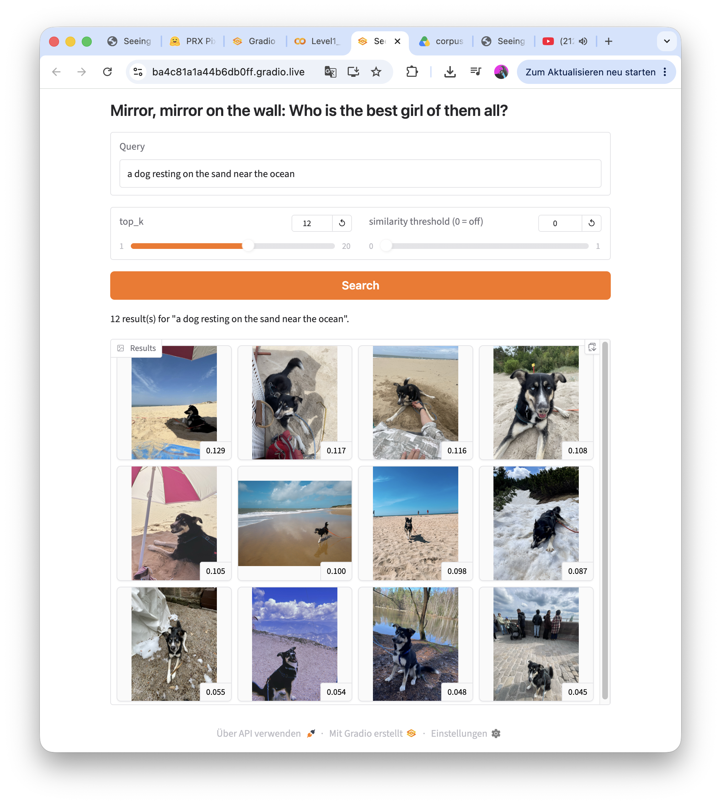
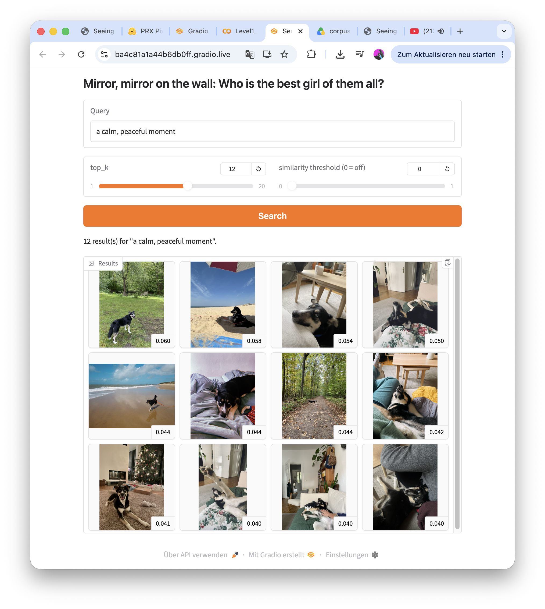
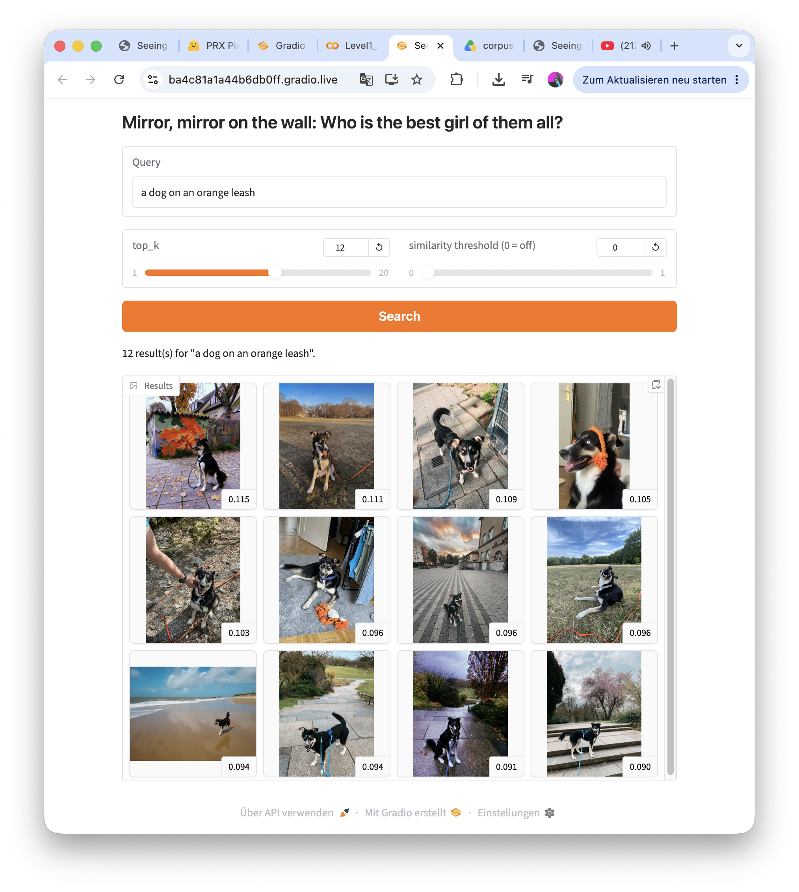
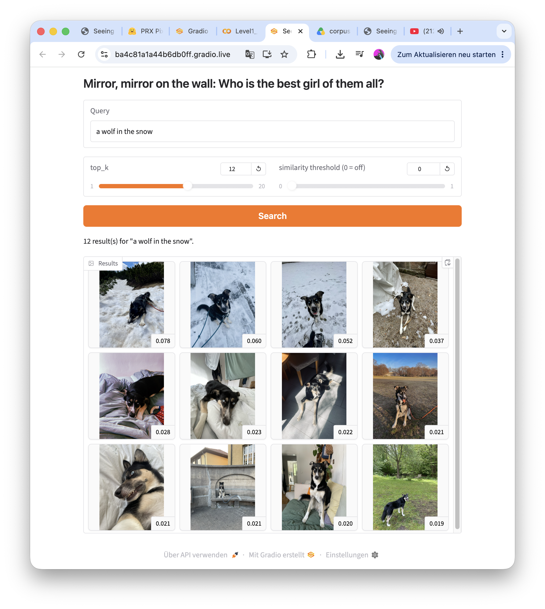
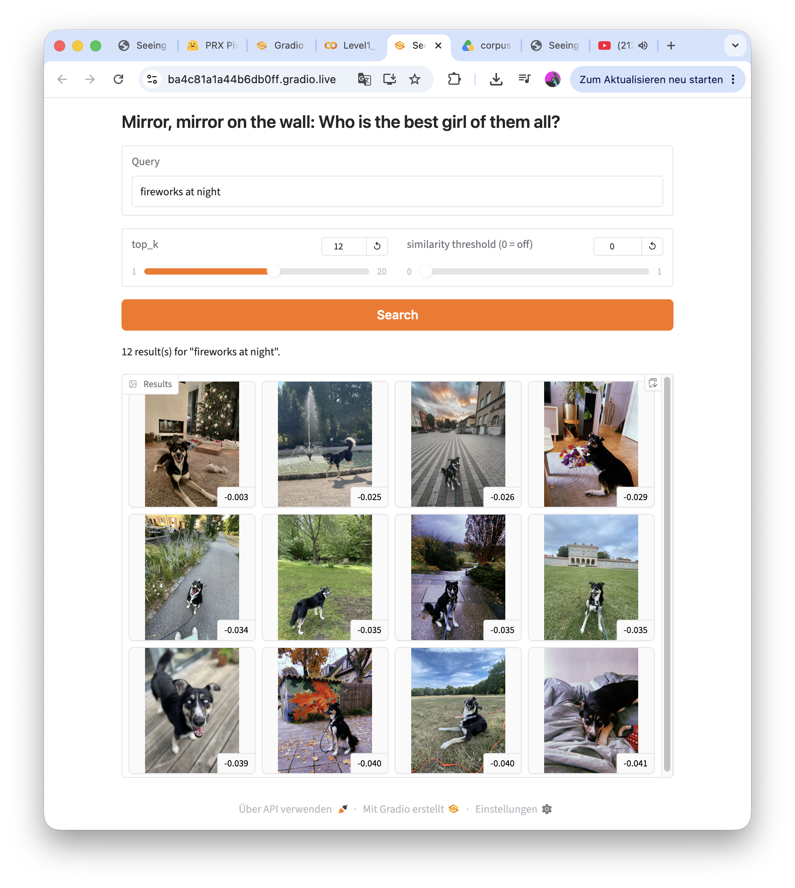
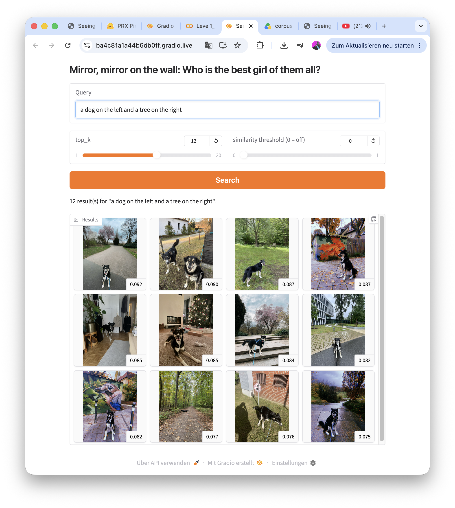
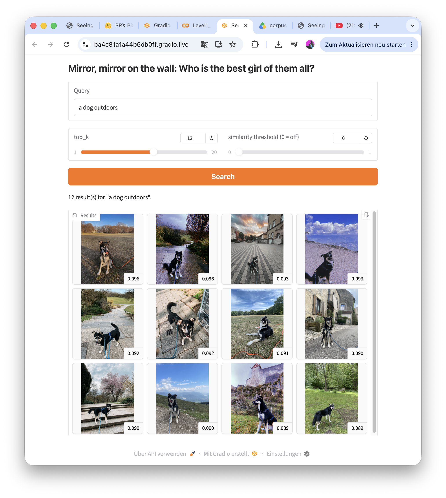
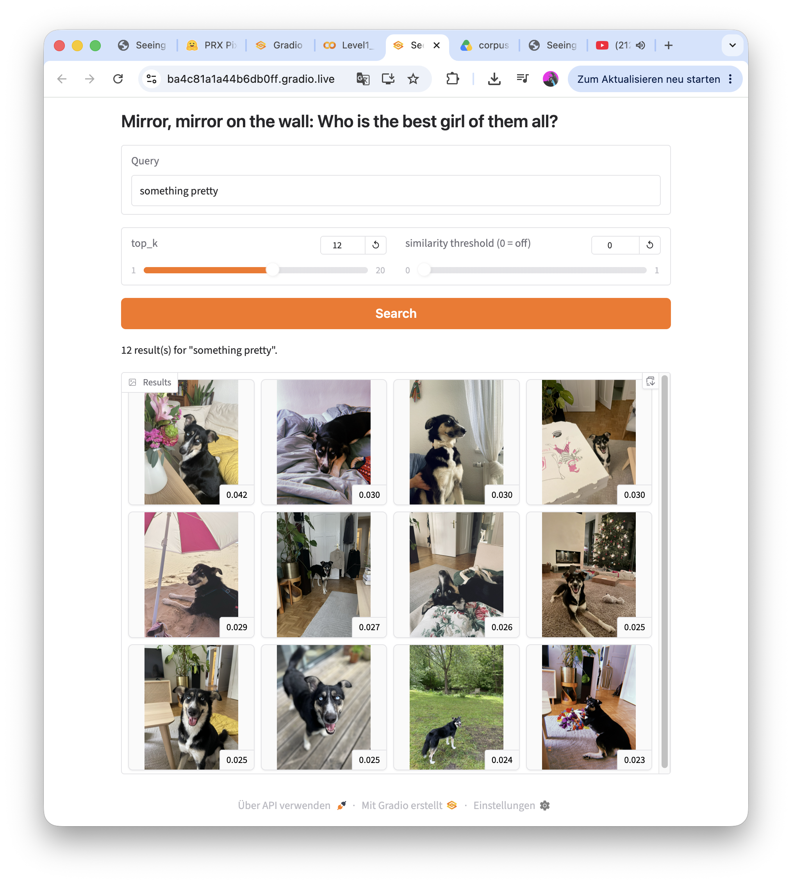
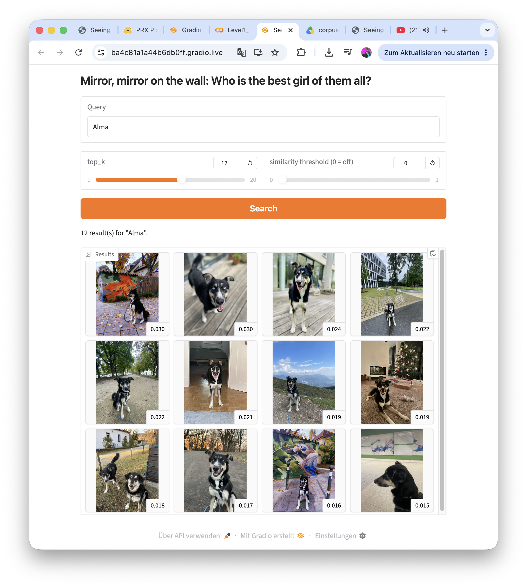

Good Girl
"Mirror, mirror on the wall: Who is the best girl of them all?"
A semantic search engine of photos of my dog Alma
Abstract
Mirror, mirror on the wall: Who is the best girl of them all? Welcome to my personal photo archive of my dog, Alma. This project builds a semantic image search engine using a Google Colab notebook and SigLIP (a contrastive dual-encoder vision-language model). It is a pure retrieval system. Every photo is embedded just once into a shared vector space, and natural-language queries are embedded right into that exact same space. The images are then ranked entirely by cosine similarity. There is no manual tagging, no captioning, and no language model generating descriptions anywhere in the pipeline. Across 10 varied test queries, the system reliably retrieves literal, concrete scenes, but its performance degrades sharply for abstract, personal, or purely aesthetic language. Interestingly, its confidence scores are much more informative when read relative to each other rather than as absolute probabilities. In the end, the most fascinating finding isn't just that the system works… it's how differently it fails depending on what kind of question you ask.
Motivation & Corpus Statement
This corpus is a personal photo archive of my dog, Alma, spanning three years (2023–2026) and covering everything from beach trips and hikes to everyday life at home. So why did I use this corpus? Short answer: Because I want to show people pictures of my dog and also I had a shit ton of Alma pictures on my phone which were finally useful. Long answer: I chose this specific collection because I know it intimately enough to immediately notice when a retrieval system gets something wrong... which is the entire point of building a system like this rather than just trusting it. Since the initial 374 exported images exceeded the allowed range of 50–150, the dataset required careful curation. First, I removed obvious redundancies such as images containing humans or text, reducing the count to 178. I then filtered out another 48 photos by cutting near-identical burst shots and overrepresented scenes. My main selection criteria was diversity over aesthetic quality. I intentionally kept a mix of different years, locations, and weather conditions to prevent any single repetitive setting from dominating the embedding space. The final corpus contains 130 images. I am, of course, aware that true diversity is still limited here, since it is ultimately just 130 pictures of my dog.
The final corpus is 130 images. Because the subject is a dog rather than a person, there are no third-party consent concerns for the primary subject. A small number of images with strangers visible in public-space backgrounds were deprioritised during curation.
- Size: 130 images (from an original archive of >800)
- Source: My own photography of my dog Alma, 2023–2026
- Curation: manual first pass, then systematic removal of export duplicates and redundant near-identical compositions, keeping temporal/situational spread over aesthetic "best-of" selection
Approach
For the technical implementation, I decided to use SigLIP (google/siglip-base-patch16-224). It operates as a dual-encoder model, meaning there is one dedicated encoder for the images and another one for the text. The interesting part here is that it is trained with a sigmoid loss. This means it scores every single image-caption pair completely independently, rather than normalizing across an entire batch like the classic CLIP model does. It is important to note that there is no decoder or language generation involved in this system. The model does not generate text; it simply places an image or a text string as a coordinate into a shared vector space, and then calculates the spatial distance between them to see how well they relate. To optimize the workflow, all 130 corpus images are embedded through the image encoder just once. I L2-normalized them and cached them to my Google Drive as a .npy file. This is very practical, as the notebook never has to recompute the embeddings when starting a fresh runtime. At query time, the text encoder maps your search string into that exact same vector space. The system then uses cosine similarity—essentially a plain dot product between the normalized vectors to rank the entire image corpus against your search. There are only two retrieval parameters: top_k (the amount of results) and an optional similarity threshold. To make the experience more visual and interactive, I exposed both of these settings directly within the Gradio interface.

SigLIP encoder -> embeddings -> cosine similarity -> top-k -> Gradio">Results: 10 different queries
I tested the retrieval system with ten different queries, each designed to explore a different aspect of the embedding space. The queries include direct object matches, paraphrases, mood-related terms, colors, similar but imperfect matches, concepts that are not present in the dataset, spatial relationships, broad and vague descriptions, as well as Alma's name as an out-of-vocabulary example. The similarity scores are based on cosine similarity, which theoretically ranges from −1 to 1. In this corpus, however, the scores only range from about −0.05 to 0.13.
- 1. An easy literal match: A concrete object or scene your corpus clearly has.
- 2. A synonym or paraphrase of (1): Does the score hold up, or drop a lot?
- 3. An abstract / mood query: Embeddings often capture some mood signal, but weakly.
- 4. A colour-based query
- 5. A near-miss concept that is visually similar but wrong (e.g. query for something adjacent to what's actually in an image).
- 6. An absent concept: Something definitely not in your corpus. Does the similarity correctly stay low, or does it confidently return nonsense?
- 7. A composition/spatial query: ("X on the left of Y") Per the lab notebook, expect the bag-of-concepts weakness: swapped word order often scores almost identically.
- 8. top_k breadth query: A query that should return many good matches (test `top_k`).
- 9. Vague query: A deliberately ambiguous/vague query.
- 10. Unknown Vocabulary: A query built from vocabulary you don't expect SigLIP to know well (a personal name, an in-joke, a very specific technical term).
This query worked very well. The top four results have relatively high similarity scores (0.131–0.107), followed by a clear drop after the fifth image (0.075 and below). The highest-ranked images are all actual beach scenes. Overall, this query achieved the highest similarity scores out of all ten queries. This suggests that concrete and clearly recognizable scenes are represented much more strongly in the embedding space than more abstract concepts.

The similarity scores are almost identical (0.129–0.087 vs. 0.131–0.107), and the same four images appear at the top, only in a slightly different order. This shows that the results are more stable than expected. It seems that SigLIP has a consistent representation of "beach" in the embedding space, so changing the wording from "beach" to "sand and ocean" has very little effect on the retrieved images..

Compared to the other queries, this one achieved much lower similarity scores (max. 0.060, dropping to around 0.040). The retrieved images were all over the place showing things like parks, beaches, beds, forests, a Christmas tree and cuddling on the couch and bed. There was no obvious visual connection between them. Instead of forming a clear cluster, this mood-based query resulted in a rather random collection of images

The top results often contain something orange, but they are not consistently showing an actual leash. For example, the first result shows an orange mural, the fourth an orange toy headband, and the sixth an orange chew toy. This suggests that the model mainly focuses on the visual concept of “orange” rather than understanding the relationship between the color and the specific object. It shows the limitation of the bag-of-concepts approach, where attributes and objects are not always connected correctly.

The top three results are actually the correct snow photos, but the highest similarity score is only 0.078, which is much lower compared to the beach query (0.131). The model is able to find the right images, but with less confidence. This shows that even when the overall visual context (snow, similar clothing patterns) matches, the model seems to struggle more when the searched object or concept does not perfectly fit the image content.

All 12 similarity scores are negative (−0.003 to −0.041) making this the only query with consistently negative values. This is actually one of the clearest results of all the queries. Instead of forcing a match and returning unrelated fireworks images, the model correctly shows that there is no strong connection between the query and the available images. This is not a failure or hallucination but rather the expected behaviour.

The highest similarity scores are slightly different (0.092 vs. 0.077) and the top-ranked images change a little. However, both results come from the same general image group, showing paths, trees and Alma near trees. The differences seem to come more from small wording variations rather than actual spatial understanding. The model recognizes that “dog” and “tree” often appear together but it does'nt really understand their exact position or relationship in the image..

The similarity curve is extremely flat with only a small difference between the 1st and 12th result (0.096 to 0.089). This suggests that the broad query matches a large group of similar images without a clear best result. Within this pool, the ranking appears almost random because the model cannot strongly distinguish between the individual images.

Similar to query 3, this result shows a very flat and low similarity range (max is 0.042). The retrieved images are a mixed collection of unrelated content including flowers, plants, a bow collar, a pizza box, the beach etc. without a clear visual connection. This suggests that aesthetic judgments without a concrete visual object are difficult for the model to find as they do not create a strong or specific target in the embedding space.

The model doesn't know my dog's name, so that's why I used it for this query. It achieved the lowest similarity scores among all positive-scoring queries (maximum 0.030)... only slightly above the noise level of the fireworks test. The retrieved images appear almost random including murals, portraits, a Christmas tree and mountain views without any clear connection. This confirms that Alma's name does not have a learned visual meaning for SigLIP. The model can recognize general concepts but it does not understand individual identities or specific names.
One interesting observation is that the maximum similarity scores vary depending on the type of query. Concrete object-based queries reach much higher scores (around 0.09–0.13), while vague or mood-related queries only reach about 0.03–0.06. The query for a concept that is not present in the dataset even produces negative scores. This shows that using one fixed similarity threshold for all query types would not work equally well and should be adapted depending on the search task.
Project Reflection
Running these ten queries on a photo archive that I know very well was a really interesting experience. Because I know the images so well, I already had an idea of what the correct results should look like, which made it much easier to spot where SigLIP performed well and where it struggled. What surprised me the most were the similarity scores. I expected the model to be either "right" or "wrong", but instead it produced different levels of confidence that only make sense when comparing them to each other, not as absolute values. The two composition queries were especially interesting because they returned almost the same images in nearly the same order, even though the wording was changed. This clearly showed that the model recognizes the same concepts but does not really understand their spatial relationship within the image. Overall, I expected that the results would be fairly similar since in the end it’s ultimately just 130 pictures of my dog (only!) just in slightly different settings. But I hope I reached my goal by showing you all her best sides.
Limitations
- Compositional / relational blindness: Changing the order of two objects in a query hardly changes the results. This suggests that SigLIP is much better at recognizing which objects are present than understanding how they are arranged in the image.
- Weak attribute binding: Color-based queries often return images that contain the correct color somewhere in the scene, but not necessarily on the intended object.
- No personal or proper-noun grounding: The model does not know that my dog is called Alma. Without additional captioning or fine-tuning, proper names have no meaning for the retrieval system.
- Small dataset: Since the corpus contains only 130 images, unique scenes are difficult to distinguish from random matches. More common scenes, such as beach photos, are represented much more consistently.
- No explanation of results: SigLIP cannot explain why it retrieved a particular image. The similarity score is the only indication of how confident the model is in its results.
Sources & References
- Course VLM lab notebook, CompSci for Designers 2 (SigLIP/Qwen3-VL comparison, Part 1 & 2).
- Hugging Face model card:
google/siglip-base-patch16-224.